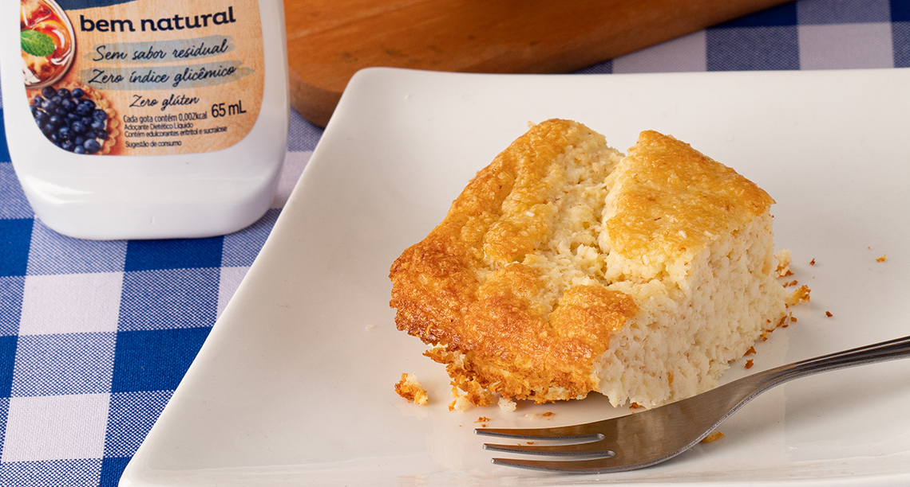

Doce de Cocada no Forno
INGREDIENTES
100g de coco ralado seco e sem açúcar
1/2 xícara (chá) de leite desnatado (100ml)
200ml de leite de coco
1 colher (sopa) de óleo vegetal de sua preferência ou azeite de oliva
2 ovos
1 colher (sopa) de farinha de trigo integral
25 gotas de Zero-Cal Eritritol Bem Natural Líquido 1 colher (chá) de fermento em pó
Modo de Preparo
- 1. Em uma tigela média, coloque o coco ralado, o leite, o leite de coco, o óleo, os ovos, a farinha de trigo integral e o Zero-Cal Eritritol Bem Natural e misture bem.
- Deixe a mistura por 2 horas na geladeira para hidratar.
- Tire a mistura da geladeira, e adicione fermento
- Despeje em uma forma (20x15cm) e leve para o forno preaquecido 180ºC por aproximadamente 30 minutos.
- Espere esfriar e sirva em seguida.